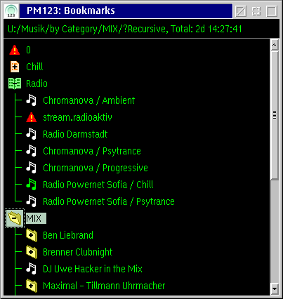

PM123's Playlist Manager
Playlist Manager is provided for browsing and managing
playlists. In fact it is nothing else but a tree view of some default
playlist file. The Playlist Manager window will remember the objects
added to it next time you open it.
If you open any other playlist in the tree view you have to
save the changes on your own. If the playlist is modified '(*)'
will show up in the window title. However, you won't see whether nested
playlists are modified.

See Playlist icons for information on
icons and colors.
Window features
- Icons
- The icons show the type and the status
of playlist item.
- Double-click
- If the clicked item is a song: navigate to
the song if this is possible within the currently loaded playlist.
If the item is a playlist: open the nested
playlist in the detailed playlist
editor.
- Direct manipulation
- You can edit the alias name.
Note that changing the the name does not change any file name. It only
changes the display string of the item in this playlist.
- Drag and Drop
- You can use Drag and
Drop to rearrange the items in the playlists, move or copy
items between different playlist or playlist manager windows or drop
file or URL objects from other applications. In the latter case only
shadows are allowed since playlists only contain references to the
original objects. You cannot drop PM123 objects on other applications.
- Context menu
- Right click on an empty space (the title, for example) to
get the main context menu.
Right click on a item to get the item's
context menu.
- Keyboard accelerators
- You may use the accelerator
keys to call functions from the context menu quickly.